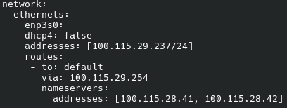
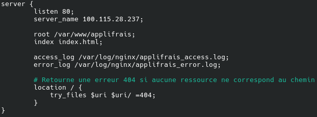
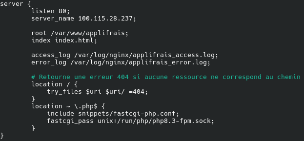
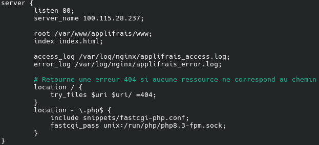
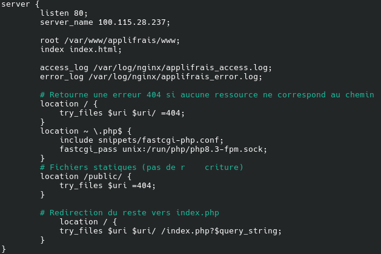

On créer une vm à partir du modèle us24 init ssh
Une fois la VM démarré on se connecte en SSH
Puis on modifie la configuration ip pour en mettre une qui est attribué à notre binôme
sudo nano /etc/netplan/50-cloud-init.yaml
On créer une vm à partir du modèle us24 init ssh
Une fois la VM démarré on se connecte en SSH
Puis on modifie la configuration ip pour en mettre une qui est attribué à notre binôme
sudo nano /etc/netplan/50-cloud-init.yaml

sudo netplan apply
whereis apache2
Si trouvé le déinstaller
sudo apt remove apache2
Sinon on peut continuer
sudo apt update
sudo apt install nginx
Pour mettre en place le firewall
whereis ufw
Si non trouvé
sudo apt update
sudo apt install ufw
Configurer les règles du firewall
sudo ufw enable
sudo ufw app list
sudo ufw allow "Nginx Full"
sudo ufw allow OpenSSH
sudo ufw status
Installer sur notre pc le fichier suivant :
Applifrais_static.zip
Dans la VM
sudo mkdir /var/www/applifrais
Via sftp transférer Applifrais_static.zip vers /home/stssio
whereis unzip
Si non trouvé
sudo apt update
sudo apt install unzip
Puis
sudo cp -r ./Applifrais_static.zip /var/www/applifrais
cd /var/www/applifrais
sudo unzip Applifrais_static.zip
cd /etc/nginx/sites-available/
sudo nano ./applifrais

sudo ln -s /etc/nginx/sites-available/applifrais /etc/nginx/sites-enabled/
cd /etc/nginx/sites-enabled/
sudo rm default
sudo nginx -t
sudo systemctl reload nginx.service
Question
nginx active-il par défaut l'affichage des dossiers ? Quelle option permet de l’activer ? Comparer ce comportement avec celui d'apache en termes de sécurité.
Non nginx n’active pas l’affichage des dossiers par défaut. L’option permettant de l’activer est autoindex on. Sur apache c’est à nous de configurer l’affichage des dossiers.
sudo apt install php-fpm
Question
Quelle version de php a été installée ?
PHP 8.3.6
Pour savoir on fait php -v
sudo systemctl start php8.3-fpm
sudo systemctl enable php8.3-fpm
sudo nano /etc/nginx/sites-available/applifrais

sudo systemctl reload nginx.service
cd /var/www/applifrais/
sudo rm -r Applifrais_static.zip index.html public/
cd /home/stssio/
Installer sur notre pc le fichier
ApplifraisV1.zip
Via sftp transférer ApplifraisV1.zip vers /home/stssio
sudo cp -r ./ApplifraisV1.zip /var/www/applifrais
cd /var/www/applifrais
sudo unzip ApplifraisV1.zip
sudo chmod -R 755 ./www/
sudo chmod -R 755 ./ScriptsSQL/
Vous devriez avoir une erreur du type Fatal error: Uncaught PDOException: could not find driver.
Question
Expliquer cette erreur?
Fatal error: Uncaught PDOException: could not find driver in /var/www/applifrais/www/include/class.pdogsb.inc.php:28 Stack trace: #0 /var/www/applifrais/www/include/class.pdogsb.inc.php(28): PDO->__construct() #1 /var/www/applifrais/www/index.php(12): PdoGsb->__construct() #2 {main} thrown in /var/www/applifrais/www/include/class.pdogsb.inc.php on line 28
On n’a pas PostgreSQL
Tester l'accès à l'URL suivante : http://IP/ScriptsSQL/gsbfrais_structure.sql
Question
Analyser les problèmes de sécurité engendrés par cette configuration.
Si l’on accède à ce lien cela nous télécharge le fichier pour la création de la base de données utilisé par le serveur
Modifier votre configuration pour ne servir que le contenu du dossier www
sudo nano /etc/nginx/sites-available/applifrais

sudo systemctl reload nginx.service
sudo apt install postgresql
sudo apt install php-pgsql
sudo nano /etc/nginx/sites-available/applifrais

sudo systemctl reload nginx.service